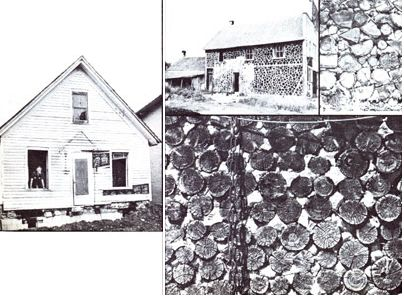
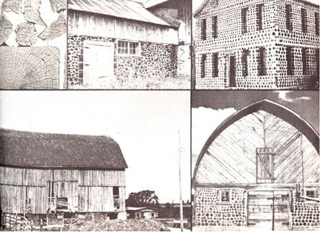

In the year and a half since this magazine began singin' the praises of stackwood houses ("We Built a $75,000 Home for Only $10,000", MOTHER NO. 48, pages 96-99), we've been asked a lot of questions about this type of lowcost construction. Most of the folks who've written to us have been curious-and some of 'em downright skeptical-about the durability of these easy-to-construct, wood-and-lime-mortar dwellings. So, we've prepared this little "history lesson", to show you the kind of life span these structures can have, and to maybe give you some "brand-new old" ideas on how to build your own house or barn out of cordwood.
Stackwood (also called stovewood, stackwall, cordwood, etc.) architecture, you see, isn't a new development at all. In fact, structures of this kind have been around for so long that the origins of the technique have been forgotten.
Some very old stovewood buildings (some of which are shown in the photos that accompany this article) are still standing, however, and many interested groups and individuals have begun to look into the history of this form of construction.
For example: The University of Manitoba's Northern Housing Committee-which advocates stackwall construction-believes that the idea came to North America from the Scandinavian countries, where lime and/or clay were supposedly used to mortar short lengths of wood into extremely low-cost but durable walls. Most other "authorities", however, including Milwaukee architect Richard W.E. Perrin-a part-time stackwood historian-feel that "woodmasonry" is a Canadian invention.
Wherever the construction method came from, however, we know that it was practiced in the United States in the mid-1800's, thanks to the discovery-by the Reverend Paul B. Jenkins-of a stackwood home built in Walworth County, Wisconsin in 1848. Mr. Jenkins described his find, saying "the remarkable feature about this house is that it is con structed entirely of 'stovewood'. That is to say, instead of brick or stone, David Williams [the builder of the house, and a descendant of Rhode Island's founder, Roger Williams - BW] prepared with infinite labor an immense amount of wood, cut, sawed, and split into sticks fourteen inches in length, exactly such sticks as are used for all kitchen cookstoves where wood is burned today."
Unfortunately, though there were several attempts to preserve the Williams home, it was torn down in 1950 . . . a century and two years after it was built.
It's no surprise, by the way, that this "granddaddy" of recorded North American cordwood structures was discovered in Wisconsin, because historians do agree that stackwall architecture was introduced into the Badger State (as well as Michigan's Upper Peninsula) by either Canadian or Scandinavian immigrants during the first half of the nineteenth century. The stacked-stovewood homes built by these newcomers really "caught on" in that cold and heavily timbered country, and a "golden age" of stackwood construction took place there in the early 1900's.
Most of the older cordwood homes that are around today, in fact, date back to that period. And, since 80 years isn't all that long (remember, these buildings can-because the lime in the mortar tends to preserve the wood-last well over a century), there are probably a good number of those stick-and-mortar homes, barns, etc. yet to be discovered.
And how can buildings made of such distinctive materials avoid being identified for what they are? Easily, because-in many cases-the structures have been camouflaged! You see, most turn-of-the-century Americans wanted their log homes to look "modern", so they often covered the stackwood walls of their houses-when they built such dwellings-with plaster, shingles, clapboard, and so forth . . . in order to present a "civilized" face to the world. And, until time or remodeling tears those disguises away, the stovewood walls underneath remain hidden. (Keep this in mind if you're in the market for an abandoned farmhouse . . . you just might locate an historical treasure!)
Of course, the discovery of old cordwood buildings does more than satisfy the curiosity of antiquarians. It also provides the rest of us with "solid" proof that inexpensive, hand-constructed dwellings can be durable as well as practical. In fact, those stackwood homes-built in the late nineteenth and early twentieth centuries-will probably outlast most of the overpriced energy guzzlers that are being thrown together today!
Want to know more about stackwood architecture? If so, take a look at the following:
1. "We Built a $75,000 Home for Only $10,000", MOTHER NO. 45, pages 96-99
(Issue No. 45 is currently out of print but may be available-if still in stock-from bookstores that carry MOTHER . . . or from your local library.)
2. Building the Cordwood Home by Jack Henstridge (Centennial Print, 1978). Large paperback. $6.00.
3. Stackwall: How to Build It by the University of Manitoba's Northern Housing Committee (University of Manitoba, 1977). Large Paperback. $12.00.
4. How to Build Log-End Houses by Robert L. Roy (Drake, 1977). Large paperback, $6.95.
(The above volumes are available at some bookstores or can be ordered from Mother's Bookshelf, P.O. Box 70, Hendersonville, North Carolina 28739, for the listed price plus 96 cents for shipping and handling.)
|
 |
 |
|